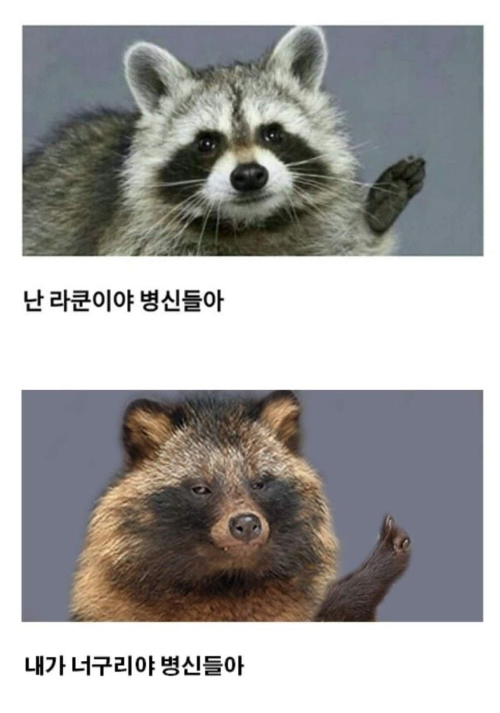
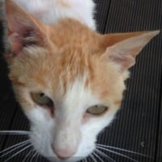
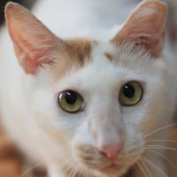

https://x.com/Rainmaker1973/status/2103458377049256412
새로운 연구에 따르면 너구리가 가축화의 초기 징후를 보이고 있다
아칸소 대학교는 도시 너구리가 더 작은 주둥이를 가지고 있으며, 이는 가축화 증후군의 징후라고 밝혔다.

https://x.com/Rainmaker1973/status/2103458377049256412
새로운 연구에 따르면 너구리가 가축화의 초기 징후를 보이고 있다
아칸소 대학교는 도시 너구리가 더 작은 주둥이를 가지고 있으며, 이는 가축화 증후군의 징후라고 밝혔다.

당연히 그럴 것 같긴 한데
롱노즈에서 코숏해져가는 라쿤
너구리 존나 얄밉게도 생겼네
인간에게 적대적인 개체는 다 뒤져버렸기 때문인가
좀 빨갛게 만들어서 렛서펜더처럼만들어봐 하는김에
좀도둑처럼 생긴게 라쿤 중범죄자 처럼생긴게 너구리
뭔 느낌인지 알겠네 ㅋㅋㅋㅋ
위 영상에선 거의 개랑 다를게 없네
광견병 어캄
러닝하는데 이새끼들 자꾸 달라붙어;
뭐야 미국살어?
ㄴㄴ 한강 주변 내천보면 존나 많음;
걔네들은 진짜 너구리잖아 ㅋㅋ
본문은 라쿤이구 ㅋㅋ
공식이 뭘알아!
팥팥팥팥
우습게 볼게 아닌게 광견병 최대 매개체임
그래서 시에서 막 광견병약 포함된 먹이 뿌리지 않나?
맞음 일단 광견병은 없긴한데
그래도 더럽고 그러니깐 위험은 하지 ㅋㅋ
그 정책 이후에도 부동의 1위임
야생동물 포획 검사에서 2014년 이후로 광견병 발견된적이 없으니 별 이상 없으면 영원히 1위겠네
근데 마지막 광견병이 07이던가 04던가...
코노 타누키!!
광견병 익스프레스
어찌됐던 결론은 병신으로 끝나네 ㅆㅂ ㅋㅋㅋㅋㅋㅋㅋ
댓글에서 광견병타령하는데 광견병은 개도 걸리는거 아니야?
광견병 얘기가 왜 나왔는지 이해를 못했을 때 나올 수 있는 댓글
이미 가축화된 개체 얘기하는거야
마 네임 이스 롸켓, 롸켓 라쿤
토끼 어서오고
라쿤시발 존나 똑똑해서.. 우리집 새벽에 엄청 돌아다니는데 카메라에 자주잡힘 파썸이랑
가축화가 되면 주둥이가 왜짧아지지
맛있는걸 자주 먹어서 입이 짧아지나
부드럽거나 잘 부서지는걸 씹어서 저작운동이 줄어들기 때문인가??
퇴화되는건가!?


냄새 많이나지 않나
병신들아~토끼보고 라쿤 ㅇㅈㄹ
뻐큐하지마
너구리는 개과고
라쿤은 아메리카너구리과래
그럼 라쿤은 아메리카개과 아니야?
재패니즈 스피츠 키우는데 얘네랑 좀 비슷하게 생김
개+너구리 = 개구리
니가 라쿤이든 너구리든 상관 없다 구멍은 같으니까 으럇 으럇!
사람한테 구걸하는 녀석들이 더 잘 살아남았나?